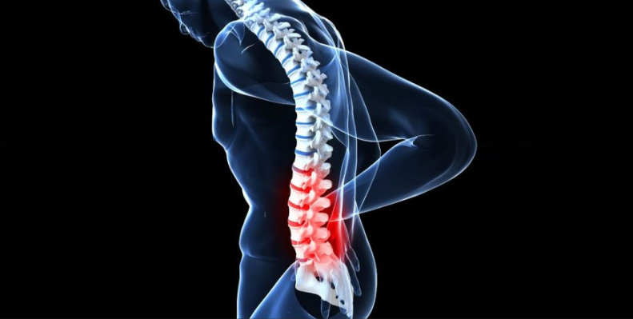
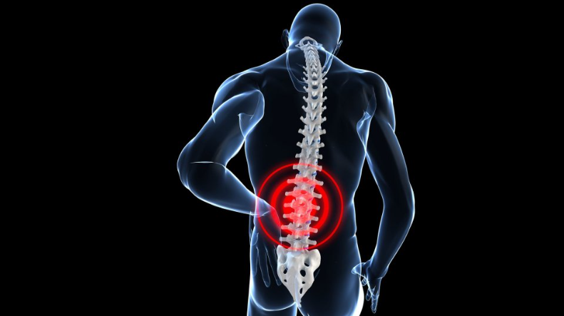

Bienvenido a Nuestra Clínica
Ofrecemos los mejores servicios de quiropráctica para tu salud y bienestar.
Nuestros Servicios
Ajustes Quiroprácticos
Mejora tu postura y alivia el dolor con nuestros ajustes quiroprácticos.
Masajes Terapéuticos
Relájate y recupera tu salud con nuestros masajes terapéuticos.
Terapia Natural
Tratamientos naturales para tu bienestar físico y mental.
Beneficios de la Quiropráctica
Mejora la Postura
La quiropráctica ayuda a corregir problemas de postura y alineación.
Alivia el Dolor
Reduce el dolor en la espalda, cuello y otras partes del cuerpo.
Aumenta la Flexibilidad
Mejora la flexibilidad y el rango de movimiento.